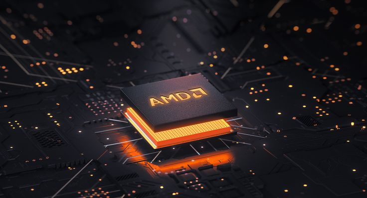
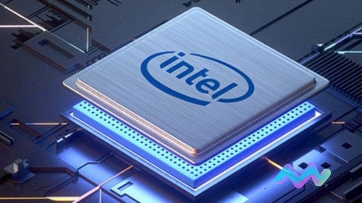

Intel dan AMD adalah dua merek prosesor yang terkenal dan dominan di pasar komputer. Kedua merek ini menawarkan berbagai model dan generasi prosesor dengan keunggulan masing-masing. Penting untuk memahami perbedaan antara Intel dan AMD sebelum membeli laptop agar dapat memilih prosesor yang sesuai dengan kebutuhan.
Prosesor merupakan salah satu komponen penting dalam sebuah sistem komputer. Prosesor bertanggung jawab untuk menjalankan tugas pemrosesan data dan instruksi dalam komputer. Dalam konteks laptop, prosesor berperan dalam menentukan kinerja dan kecepatan komputer. Mereka yang mencari laptop baru seringkali melakukan penelitian tentang perbedaan kinerja, harga, efisiensi daya, dan kompatibilitas antara Intel dan AMD.
Intel telah lama mendominasi pasar prosesor dengan reputasi kinerja yang kuat dalam tugas-tugas pemrosesan tunggal. Di sisi lain, AMD telah muncul dengan prosesor yang menawarkan kinerja multi-inti yang lebih baik dengan harga yang lebih terjangkau. Kedua merek ini terus berinovasi dan merilis generasi baru prosesor dengan peningkatan kinerja, efisiensi daya, dan fitur-fitur terbaru. Jadi, sebelum membeli laptop, penting untuk mempertimbangkan perbedaan Intel dan AMD serta memilih prosesor yang sesuai dengan kebutuhan dan preferensi.
Intel Corporation adalah perusahaan multinasional yang berbasis di Amerika Serikat dan terkenal karena merancang dan memproduksi mikroprosesor serta memiliki keahlian dalam sirkuit terpadu. Selain itu, Intel juga mengembangkan kartu jaringan, chipset papan induk, komponen, dan perangkat lainnya. Saat ini, Intel telah meluncurkan generasi terbaru prosesor mereka, yaitu generasi ke-13 dari lini produk Intel Core.
AMD (Advanced Micro Devices) merupakan perusahaan teknologi yang berbasis di Sunnyvale, California, Amerika Serikat. Mereka mengkhususkan diri dalam merancang dan memproduksi sirkuit terpadu (IC) dan prosesor. AMD telah mengalami perkembangan yang signifikan dalam persaingan dengan Intel. Sebagai langkah terbaru, AMD telah meluncurkan seri terbaru prosesor mereka yang dikenal sebagai Ryzen 7000.
Prosesor Intel seringkali unggul dalam kinerja single-core, membuatnya menjadi pilihan populer untuk aplikasi seperti game yang lebih bergantung pada satu inti prosesor.
Intel seringkali menjadi pionir dalam memperkenalkan teknologi baru, seperti Thunderbolt dan Optane Memory, yang dapat meningkatkan pengalaman pengguna secara keseluruhan.
Banyak laptop dan desktop dari berbagai produsen besar menggunakan prosesor Intel, memberikan konsumen lebih banyak pilihan dalam hal merek dan model perangkat.
Produk Intel seringkali memiliki harga yang lebih tinggi, terutama pada kategori high-end, membuatnya kurang terjangkau untuk beberapa konsumen.
Beberapa model prosesor Intel, terutama di kategori harga yang lebih rendah, mungkin memiliki jumlah inti yang lebih sedikit dibandingkan dengan pesaing AMD pada harga yang sama.
Beberapa prosesor Intel, terutama pada kinerja tinggi, dapat menghasilkan panas lebih banyak dibandingkan dengan pesaingnya.
rosesor AMD seringkali menawarkan nilai yang lebih baik untuk uangnya, membuatnya menjadi pilihan menarik untuk konsumen dengan anggaran terbatas.
AMD seringkali unggul dalam hal kinerja multi-core, terutama pada produk-produk dengan jumlah inti yang lebih banyak, cocok untuk tugas-tugas yang membutuhkan parallel processing.
AMD telah mengusung konsep HSA yang mengintegrasikan CPU dan GPU untuk kinerja komputasi yang lebih baik.
Meskipun AMD telah melakukan peningkatan signifikan, beberapa prosesor masih kalah dalam kinerja single-core bila dibandingkan dengan Intel.
AMD mungkin belum mendominasi pasar laptop dan desktop premium seperti Intel, meskipun terus berusaha memperluas kehadirannya di segmen tersebut.
Beberapa model laptop atau desktop mungkin kurang memiliki variasi opsi jika dibandingkan dengan produk Intel dalam hal dukungan dari berbagai produsen.
Dalam dunia komputasi, persaingan antara Intel dan AMD telah menjadi perbincangan yang tak kunjung padam. Kedua perusahaan ini merupakan pemimpin utama dalam industri prosesor komputer, dan setiap tahunnya keduanya merilis produk-produk terbaru yang menawarkan peningkatan kinerja dan inovasi. Penting untuk mencatat bahwa persaingan antara Intel dan AMD terus berlanjut, dan setiap generasi produk baru membawa inovasi dan peningkatan kinerja. Oleh karena itu, sebelum membuat keputusan, disarankan untuk melakukan riset terkini tentang produk terbaru dari kedua perusahaan dan mempertimbangkan kebutuhan spesifik pengguna.